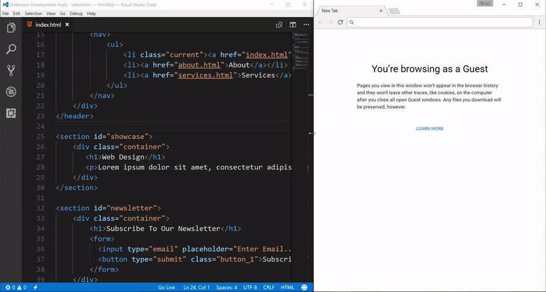

บทที่ 7: การสร้างเว็บเพจเชิงตอบสนองและการประมวลผลผ่าน DOM และ BOM
บทนำในการพัฒนาเว็บแอปพลิเคชันฝั่งผู้ใช้งาน (Client-Side Web Development) ภาษา JavaScript ไม่ได้ทำหน้าที่เพียงแค่ประมวลผลตรรกะหรือเก็บข้อมูลในตัวแปรเท่านั้น แต่หัวใจสำคัญคือการเข้าไปควบคุม โต้ตอบ และเปลี่ยนแปลงส่วนประกอบต่างๆ บนหน้าเว็บเพจแบบเรียลไทม์ บทนี้จะนำพานักพัฒนาเปลี่ยนผ่านจากระบบหลังบ้านอย่าง Node.js เข้าสู่การรันจาวาสคริปต์บนเว็บเบราว์เซอร์อย่างเต็มรูปแบบ ผ่านการศึกษาเครื่องมือทรงประสิทธิภาพ 2 ตัวหลัก คือ Document Object Model (DOM) ซึ่งทำหน้าที่เป็นตัวแทนโครงสร้างวัตถุของเอกสาร HTML และ Browser Object Model (BOM) ซึ่งทำหน้าที่ควบคุมคุณลักษณะภายนอกและหน้าต่างของโปรแกรมเบราว์เซอร์ การเข้าใจกระบวนการทำงานเหล่านี้เป็นกุญแจสำคัญในการเนรมิตเว็บเพจธรรมดาให้กลายเป็นแอปพลิเคชันที่ตอบสนองอย่างชาญฉลาด
จุดประสงค์การเรียนรู้
เมื่อศึกษาบทเรียนนี้จบแล้ว ผู้เรียนควรมีความสามารถดังนี้: * สามารถติดตั้งสภาพแวดล้อมและทดสอบโค้ดบนเบราว์เซอร์ผ่านระบบ Live Server บน VS Code ได้อย่างถูกต้อง * เข้าใจสถาปัตยกรรมและโครงสร้างลำดับชั้นของ Document Object Model (DOM) * ใช้งานตัวเลือกสืบค้น (DOM Selectors) ทั้งรูปแบบระบุพิกัดตรงตัวและรูปแบบประยุกต์ใช้ลวดลาย CSS ได้อย่างชำนาญ * สามารถปรับเปลี่ยนเนื้อหา (Content), แอตทริบิวต์ (Attributes), และรูปแบบสไตล์ (CSS Styles & Classes) ของอิลิเมนต์ HTML แบบไดนามิก * มีทักษะการเพิ่ม ลบ แทรก และแทนที่อิลิเมนต์บนหน้าเว็บผ่านคำสั่งควบคุม Dynamic DOM Nodes * เข้าใจหลักการและสามารถเรียกใช้ Browser Object Model (BOM) ในการจัดการหน้าต่าง ประวัติการท่องเว็บ และพิกัดตำแหน่ง URL
ความสัมพันธ์ระหว่างผู้ใช้, เบราว์เซอร์, DOM และ BOM
อินโฟกราฟิกด้านล่างแสดงโครงสร้างการเชื่อมโยงการทำงานเมื่อ JavaScript รันบนเว็บเบราว์เซอร์ โดยมี BOM ทำหน้าที่ควบคุมตัวแอปพลิเคชันเบราว์เซอร์ทั้งหมด และมี DOM (ภายใต้ออบเจกต์ document) ทำหน้าที่ควบคุมโครงสร้างเนื้อหาของเว็บเพจภายในหน้าต่างนั้น:

1. การเตรียมสภาพแวดล้อมการเขียนสคริปต์บนเว็บเพจ
เบราว์เซอร์สมัยใหม่ทำงานในลักษณะผู้ตีความคำสั่ง (Interpreter) โดยจะประมวลผลไฟล์ HTML และแปลคำสั่งในแท็ก <script> ออกแสดงผลหน้าจอ การพัฒนาในยุคนี้สามารถจำลองเซิร์ฟเวอร์ท้องถิ่นขึ้นมาด้วย Live Server บน Visual Studio Code เพื่อเพิ่มความเร็วในการทดสอบระบบ
การติดตั้งและใช้งาน Live Server บน VS Code
[!IMPORTANT] ขั้นตอนการติดตั้ง Live Server สำหรับผู้เรียน:
- เปิดโปรแกรม VS Code แล้วคลิกที่ไอคอน Extensions (หรือกดปุ่ม
Ctrl+Shift+Xบน Windows)- ในช่องค้นหา ให้พิมพ์คำว่า
Live Server(พัฒนาโดย Ritwick Dey) แล้วกดปุ่ม Install- เมื่อติดตั้งเสร็จ ให้คลิกเปิดโฟลเดอร์งานของคุณใน VS Code
- สร้างไฟล์ HTML (เช่น
index.html) จากนั้นคลิกขวาที่ไฟล์แล้วเลือก Open with Live Server (หรือคลิกปุ่ม Go Live ที่มุมขวาล่างของหน้าต่างโปรแกรม)- เบราว์เซอร์จะเปิดหน้าเว็บจำลองผ่านที่อยู่
http://127.0.5.1:5500/ขึ้นมาให้โดยอัตโนมัติ และจะทำการรีเฟรชหน้าเว็บให้ทันทีเมื่อคุณทำการแก้ไขและบันทึกโค้ด

ภาพเคลื่อนไหวสาธิตผลลัพธ์การทำงานของ Live Server (Live Reload):

หลักการสำคัญในการประกาศใช้แท็ก <script>
- การจัดกลุ่มความรู้ข้ามบล็อก (Global Shared Scope): ตัวแปรหรือฟังก์ชันที่สร้างขึ้นในแท็ก
<script>ตัวแรก (เช่น ในส่วน<head>) จะสามารถถูกนำมาเรียกใช้และคำนวณร่วมกับคำสั่งในแท็ก<script>ตัวถัดๆ ไป (เช่น ในส่วน<body>) ได้อย่างไร้รอยต่อ - สคริปต์ภายนอก (External JavaScript): การประกาศใช้แอตทริบิวต์
srcในแท็ก<script>เพื่อโหลดไฟล์สกุล.jsที่แยกสัดส่วนการเขียนตรรกะต่างหาก ช่วยให้โค้ดสะอาดตาและง่ายต่อการใช้ร่วมกันหลายๆ หน้าเพจ
ตารางเปรียบเทียบลักษณะการจัดวางจาวาสคริปต์บนเว็บเพจ
| ลักษณะการจัดวาง | รูปแบบไวยากรณ์ | จุดประสงค์และข้อดี |
|---|---|---|
| Inline (ในบรรทัด) | <button onclick="alert('OK')"> |
ใช้ตอบสนองเหตุการณ์กระชับ รวดเร็วบนอิลิเมนต์เฉพาะตัว |
| Internal (ภายในหน้า) | <script> let x = 10; </script> |
เขียนเพื่อควบคุมโครงสร้างทั้งหมดของหน้าเว็บนั้นหน้าเดียว |
| External (ไฟล์ภายนอก) | <script src="assets/app.js"></script> |
แยกไฟล์โค้ด มีระบบ Cache โหลดเร็ว ใช้ร่วมกันได้หลายเว็บเพจ |
[!TIP] คำแนะนำสำหรับการรันตัวอย่างในส่วนนี้: เนื่องจากโค้ดต่อไปนี้เป็นโครงสร้างเว็บเพจ HTML สมบูรณ์ จึงไม่มีปุ่ม Try It ให้รันบนระบบเว็บนี้ แนะนำให้ผู้เรียนสร้างไฟล์ HTML ใน VS Code และทดสอบรันด้วย Live Server เพื่อดูการทำงานจริง
ตัวอย่างประกอบ: การแชร์ค่าตัวแปรข้ามบล็อกสคริปต์ใน HTML
<!DOCTYPE html>
<html lang="th">
<head>
<meta charset="UTF-8">
<title>แชร์ขอบเขตตัวแปร Global</title>
<!-- บล็อกที่ 1: ประกาศกำหนดค่าตั้งต้น -->
<script>
const TAX_RATE = 0.07;
let productPrice = 2500;
</script>
</head>
<body>
<h3>ประมวลผลภาษีมูลค่าเพิ่ม</h3>
<!-- บล็อกที่ 2: นำค่าที่ประกาศไว้ด้านบนมาคำนวณและแสดงผลออกหน้าจอ -->
<script>
let vatAmount = productPrice * TAX_RATE;
let finalPrice = productPrice + vatAmount;
document.write("ราคาสินค้าเริ่มต้น: " + productPrice + " บาท<br>");
document.write("ภาษีมูลค่าเพิ่ม (7%): " + vatAmount + " บาท<br>");
document.write("<strong>ราคาสุทธิที่ต้องชำระ: " + finalPrice + " บาท</strong>");
</script>
</body>
</html>
2. การรับส่งข้อมูลและการรับมือกับผู้ใช้งาน (Output & Dialog Boxes)
JavaScript บนเบราว์เซอร์เตรียมกลไกการติดต่อกับผู้ใช้แบบเรียลไทม์ไว้ โดยมีความสามารถในการรับส่งข้อมูลผ่านกล่องไดอะล็อก และการพิมพ์ข้อความโครงสร้างเอกสารลงบนหน้าเว็บโดยตรงผ่านคำสั่ง document.write()
แผนผังผลลัพธ์การทำงานของ Dialog Boxes ทั้ง 3 รูปแบบ

ตารางเปรียบเทียบไดอะล็อกสื่อสารกับผู้ใช้งาน
| คำสั่งระบบ | พารามิเตอร์ที่รองรับ | ชนิดข้อมูลส่งกลับ (Return Value) | สถานการณ์ใช้งานที่เหมาะสม |
|---|---|---|---|
alert(msg) |
สตริงแจ้งเตือน | ไม่มีค่าคืนกลับ (undefined) |
การแจ้งเหตุเตือนข้อผิดพลาดหรือยืนยันความสำเร็จ |
prompt(q, default) |
คำถาม, ค่าเริ่มต้นในช่องกรอก | สตริงข้อมูลที่พิมพ์เข้ามา (หรือได้ null หากกดยกเลิก) |
การรับอินพุตเบื้องต้นจากผู้ใช้โดยไม่ต้องสร้างฟอร์ม |
confirm(msg) |
คำถามยืนยันการตัดสินใจ | ค่าบูลีน (true หรือ false) |
การสอบถามสิทธิ์ความสมัครใจ เช่น ก่อนลบข้อมูล |
[!TIP] คำแนะนำสำหรับผู้เรียน: เนื่องจากคำสั่งโต้ตอบทางหน้าต่างเบราว์เซอร์ (Dialog Boxes) ต้องการเบราว์เซอร์จริงในการเรนเดอร์กล่องป๊อปอัป โค้ดด้านล่างนี้จึงเหมาะสำหรับคัดลอกไปรันบนไฟล์สคริปต์ที่เชื่อมต่อกับไฟล์ HTML ในเครื่องและเปิดผ่าน Live Server
ตัวอย่างประกอบ: การคำนวณและตอบสนองผ่านไดอะล็อก
// สอบถามเพื่อเพิ่มระดับความมั่นใจของผู้ใช้
let allowProcess = confirm("คุณต้องการเริ่มต้นคำนวณภาษีสะสมประจำปีใช่หรือไม่?");
if (allowProcess) {
let incomeInput = prompt("กรุณากรอกยอดเงินได้สุทธิของคุณ (บาท):", "300000");
// ตรวจสอบกรณีที่กดยกเลิก หรือไม่ระบุข้อมูล
if (incomeInput !== null && incomeInput.trim() !== "") {
let income = parseFloat(incomeInput);
let tax = income * 0.05; // สมมติอัตราภาษี 5%
alert("คำนวณเรียบร้อย!\nคุณมียอดภาษีสะสมที่ต้องชำระ: " + tax + " บาท");
} else {
alert("คุณไม่ได้กรอกตัวเลข หรือกดยกเลิกการทำงาน");
}
} else {
console.log("ผู้ใช้ปฏิเสธการประมวลผลระบบ");
}
3. โครงสร้างและการสืบค้น DOM (DOM Selectors)
เบราว์เซอร์จะแปลงเนื้อหาของหน้าเว็บ HTML ให้กลายเป็นวัตถุโครงสร้างต้นไม้ที่เรียกว่า DOM ซึ่งสามารถเข้าถึงตัววัตถุเหล่านั้นได้ผ่านคลาสระบบ document ด้วยชุดฟังก์ชันสืบค้น (Selectors)
ตารางสรุปการใช้งาน DOM Selectors ยอดนิยม
| คำสั่งเรียกใช้ | ขอบเขตการค้นหา | ลักษณะค่าคืนกลับ | ข้อสังเกตเชิงลึก |
|---|---|---|---|
getElementById(id) |
ไอดีระบุเฉพาะตัว | ออบเจกต์ชิ้นเดียว | มีประสิทธิภาพความเร็วสูงสุด ค้นตามตัวพิมพ์เล็ก-ใหญ่ตรงกัน |
getElementsByName(name) |
ค้นจากแอตทริบิวต์ name | อาเรย์ออบเจกต์ (NodeList) |
มักใช้คู่กับฟอร์มและกลุ่มปุ่มตัวเลือก (radio, checkbox) |
getElementsByTagName(tag) |
ค้นจากชื่อแท็ก HTML | อาเรย์ออบเจกต์ (HTMLCollection) |
สะดวกเมื่อต้องการเปลี่ยนค่าทั้งประเภท เช่น ลิสต์ <li> ทั้งหมด |
getElementsByClassName(cls) |
ค้นจากคลาสของ CSS | อาเรย์ออบเจกต์ (HTMLCollection) |
สามารถระบุกลุ่มอิลิเมนต์ที่มีการตั้งคลาสซ้ำกันได้ |
querySelector(sel) |
ระบุไวยากรณ์แบบ CSS Selector | ออบเจกต์ชิ้นแรกตัวเดียว | มีความยืดหยุ่นสูง ค้นหาเชิงลึก ซ้อนระดับได้ง่าย |
querySelectorAll(sel) |
ระบุไวยากรณ์แบบ CSS Selector | อาเรย์ออบเจกต์ (NodeList) |
ดึงรายการที่ตรงทั้งหมดออกมา สามารถเข้าถึงผ่านลูปได้อย่างดี |
ไวยากรณ์ลวดลายของ CSS Selector สำหรับ querySelector
- ตัวเลือกคลาสและไอดี:
.box-warning(ค้นหาคลาส),#title(ค้นหาไอดี) - ตัวเลือกแอตทริบิวต์:
input[type="checkbox"],input[name="color"][readonly] - ตัวเลือกลำดับโครงสร้าง (Structural Pseudo-classes):
div > span(สแปนที่เป็นลูกตรงของดิฟ),span:first-child(ลูกคนแรกสุดที่เป็นสแปน),span:nth-child(2)(ลูกพิกัดตำแหน่งที่ 2)
[!TIP] คำแนะนำสำหรับผู้เรียน: ตัวอย่างโค้ด HTML ด้านล่างนี้อ้างอิงและจัดการโครงสร้างของหน้าเว็บด้วย DOM Selector กรุณานำโค้ดนี้ไปรันผ่านระบบ Live Server ใน VS Code เพื่อดูการบันทึกข้อความลงบนหน้าต่าง Web Developer Console ของเบราว์เซอร์จริง
ตัวอย่างประกอบ: การสืบค้นพิกัดเดี่ยวและกลุ่มด้วย DOM Selectors
<!DOCTYPE html>
<html>
<head>
<meta charset="UTF-8">
<title>สาธิตสิทธิ์การสืบค้น DOM Selectors</title>
</head>
<body>
<h1 id="title">หน้าหลักควบคุมร้านค้า</h1>
<ul class="product-list">
<li class="item">เสื้อยืดลำลอง</li>
<li class="item">กางเกงขายาวกีฬา</li>
<li class="item">รองเท้าวิ่งฟิตเนส</li>
</ul>
<script>
// 1. สืบค้นพิกัดเดี่ยวผ่าน id
let mainHeader = document.getElementById("title");
console.log("หัวข้อเดิม:", mainHeader.innerHTML);
// 2. สืบค้นพิกัดยืดหยุ่นด้วย CSS Selector ดึงรายการทั้งหมด
let listItems = document.querySelectorAll(".product-list > .item");
// วนลูปเพื่ออ่านข้อความของผลลัพธ์ทั้งหมด
for (let product of listItems) {
console.log("ชื่อสินค้าในลิสต์:", product.innerText);
}
</script>
</body>
</html>
4. การจัดการเนื้อหาและแอตทริบิวต์ (Content & Attribute Manipulations)
เมื่อเข้าถึงอิลิเมนต์เป้าหมายได้แล้ว เราสามารถเลือกเปลี่ยนข้อความภายในของมัน หรือควบคุมแอตทริบิวต์ต่างๆ ของตัวแท็ก เช่น เปลี่ยนพิกัดภาพสัญลักษณ์ เปลี่ยนสถานะการปิดปุ่มทำงาน เป็นต้น
ตารางสรุปการทำงานของ innerHTML, innerText และ value
| พร็อพเพอร์ตี้ | รูปแบบการเข้าทำงาน | ผลลัพธ์เชิงเทคนิค |
|---|---|---|
innerHTML |
อ่าน/เขียน โครงสร้างเนื้อความ | แสดงผลข้อความควบคู่ไปกับ การตีความแท็ก HTML คล้ายเบราว์เซอร์จริง |
innerText |
อ่าน/เขียน เฉพาะตัวหนังสือดิบ | มองอักขระหรือแท็กที่ป้อนเข้าไปใหม่เป็นเพียงข้อความธรรมดา ไม่ประมวลผลแท็ก |
value |
ดึง/ตั้งค่า ข้อมูลของอินพุตฟอร์ม | ใช้สำหรับดึงค่าพิมพ์กรอกจาก input, textarea หรือค่าตัวเลือก select |
ตารางฟังก์ชันการจัดการคุณสมบัติและแอตทริบิวต์ (Attributes)
| คำสั่งเมธอด | หน้าที่การทำงาน | ตัวอย่างการประยุกต์ใช้งานจริง |
|---|---|---|
getAttribute(name) |
อ่านค่าพารามิเตอร์ของแอตทริบิวต์ | img.getAttribute('src') (อ่านพาร์ทรูปปัจจุบัน) |
setAttribute(name, val) |
กำหนดค่าแอตทริบิวต์ใหม่ทดแทน | btn.setAttribute('disabled', 'true') (สั่งบล็อกปุ่ม) |
removeAttribute(name) |
ลบโครงสร้างแอตทริบิวต์ออกไปจากแท็ก | input.removeAttribute('readonly') (เปิดให้อินพุตเขียนได้) |
[!TIP] คำแนะนำสำหรับผู้เรียน: ตัวอย่างด้านล่างจำลองการกดปุ่มเพื่อปลดล็อกแอตทริบิวต์
readonlyและแก้ไขเนื้อความแบบไดนามิก กรุณานำไปทดสอบรันด้วย Live Server ใน VS Code
ตัวอย่างประกอบ: การเปลี่ยนค่าเนื้อหาและควบคุมแอตทริบิวต์
<!DOCTYPE html>
<html>
<head>
<meta charset="UTF-8">
<title>จัดการแอตทริบิวต์</title>
</head>
<body>
<div id="content-box"></div>
<br>
<input type="text" id="username" value="guest_account" readonly>
<button type="button" id="btn-edit" onclick="enableInput()">อนุญาตให้ทำการแก้ไข</button>
<script>
let contentDiv = document.getElementById("content-box");
let userInput = document.getElementById("username");
// 1. เปรียบเทียบ innerHTML และ innerText
contentDiv.innerHTML = "<span style='color:green; font-weight:bold;'>โครงสร้างภายในแบบไดนามิกที่ผ่านการทดสอบแล้ว</span>";
// 2. ปลดล็อกช่องอินพุตโดยการจัดการแอตทริบิวต์
function enableInput() {
userInput.removeAttribute("readonly");
userInput.setAttribute("style", "border: 2px solid blue; padding: 4px;");
userInput.value = "กรอกชื่อใหม่ที่นี่...";
let btn = document.getElementById("btn-edit");
btn.innerText = "ปลดล็อกเรียบร้อย";
btn.setAttribute("disabled", "true"); // ปิดปุ่มเพื่อป้องกันการกดย้ำ
}
</script>
</body>
</html>
5. การควบคุมรูปแบบ CSS และจัดการคลาสสไตล์ (CSS Styles & Classes)
JavaScript สามารถเปลี่ยนรูปลักษณ์ความสวยงามของเว็บเพจได้ 2 รูปแบบหลัก คือ การตั้งค่าสไตล์แบบสอดแทรกตรงจุด (Inline Styles) ผ่านพร็อพเพอร์ตี้ .style และการเปลี่ยนชื่อคลาสสไตล์ CSS ผ่าน .className หรือออบเจกต์ความช่วยจัดระเบียบอย่าง .classList
การแปลงชื่อสไตล์ CSS จากเคบับ (Kebab-case) ไปเป็นคาเมล (CamelCase)
ในระบบสไตล์ของ CSS ปกติจะคั่นคำด้วยเครื่องหมายขีดล่างสั้น (-) แต่เมื่อถูกเรียกใช้งานบน JavaScript ระบบจะห้ามใช้สัญลักษณ์ขีดคั่น (เนื่องจากจะถูกมองเป็นการหักเลขคณิต) จึงปรับไปใช้การเขียนแบบตัวพิมพ์ใหญ่นำสายคำ (CamelCase) แทน ดังตัวอย่างนี้:
สไตล์ใน CSS: background-color font-size border-left-style
│ │ │
▼ ▼ ▼
เรียกใช้ใน JS: .style.backgroundColor .style.fontSize .style.borderLeftStyle
ตารางเครื่องมือจัดการคลาสสไตล์ของวัตถุอิลิเมนต์
| เครื่องมือคุณสมบัติ | หน้าที่การทำงาน | ตัวอย่างการทำงานจริง |
|---|---|---|
.className |
จัดการกลุ่มคลาสทั้งหมดในรูปสตริงคำยาว | el.className = 'btn warning active'; |
.classList.add(cls) |
เพิ่มรายชื่อคลาสใหม่แทรกลงไป | el.classList.add('new-animation'); |
.classList.remove(cls) |
ลบรายชื่อคลาสเฉพาะตัวที่ระบุออก | el.classList.remove('temp-hidden'); |
.classList.toggle(cls) |
ตรวจสอบเพื่อเปิด/ปิดสลับสถานะคลาส | el.classList.toggle('dark-mode'); |
.classList.contains(cls) |
เช็คว่าอิลิเมนต์ถูกครอบด้วยคลาสนี้อยู่ไหม | if (el.classList.contains('active')) { ... } |
[!TIP] คำแนะนำสำหรับผู้เรียน: ตัวอย่างโค้ดต่อไปนี้ช่วยสาธิตการใช้
classList.toggleในการสลับคลาส CSS สไตล์เป็นโหมดเตือนภัย รวมถึงการดึงค่าสไตล์จริงที่ถูกเรนเดอร์ออกมา แนะนำรันด้วย Live Server
ตัวอย่างประกอบ: การสลับคลาส CSS และตั้งค่า Inline Style แบบคาเมลเคส
<!DOCTYPE html>
<html>
<head>
<meta charset="UTF-8">
<title>สลับโหมด CSS Style</title>
<style>
.box { width: 300px; padding: 20px; text-align: center; border: 1px solid #ccc; transition: all 0.3s; }
.danger-alert { background-color: #ffdddd; color: #ff0000; font-weight: bold; }
</style>
</head>
<body>
<div id="info-card" class="box">นี่คือกล่องข้อความเตือนภัย</div>
<br>
<button type="button" onclick="triggerAlert()">แสดงผลโหมดอันตราย</button>
<script>
function triggerAlert() {
let card = document.getElementById("info-card");
// ใช้ classList สลับระดับกลุ่ม CSS
card.classList.toggle("danger-alert");
// หรือการปรับตั้งค่าแบบไดนามิกเฉพาะจุด (Inline style)
card.style.fontSize = "22px";
card.style.borderLeftStyle = "solid";
card.style.borderLeftWidth = "10px";
card.style.borderLeftColor = "darkred";
// การสืบค้นดึงค่าที่เบราว์เซอร์นำมาคำนวณสไตล์จริงในขณะนั้น
let finalColor = getComputedStyle(card).color;
console.log("สีที่เบราว์เซอร์เรนเดอร์ในขณะนี้:", finalColor);
}
</script>
</body>
</html>
6. การสร้างและปรับผังตำแหน่งอิลิเมนต์แบบไดนามิก (Dynamic DOM Node Operations)
JavaScript สามารถสร้างอิลิเมนต์หรือส่วนประกอบใหม่ของหน้าเว็บขึ้นมากลางคัน และนำมันไปบรรจุ เสียบแทรก หรือลบออกจากโครงสร้างความสัมพันธ์ต้นไม้ (DOM Tree) ได้อย่างอิสระ
แผนภาพแสดงกระบวนการสร้างและติดตั้ง Element ใหม่ลงบน DOM Tree
[1] สร้าง Element ใหม่ด้วยคลาสระบบ
let newLink = document.createElement("a");
│
▼
[2] เพิ่มแอตทริบิวต์และข้อความเนื้อใน
newLink.setAttribute("href", "https://google.com");
newLink.innerHTML = "ค้นหาผ่านกูเกิล";
│
▼
[3] ค้นหาอิลิเมนต์เป้าหมายที่เป็นพ่อผู้รองรับ
let container = document.getElementById("link-panel");
│
▼
[4] ติดตั้งและยึดโครงสร้างเชื่อมโยงเข้าด้วยกัน
container.appendChild(newLink);
ตารางสรุปคำสั่งสร้างและจัดตำแหน่ง Nodes
| คำสั่งควบคุมหลัก | หน้าที่เชิงลึก | ตัวอย่างการเขียนประยุกต์ใช้ |
|---|---|---|
createElement(tag) |
สร้างออบเจกต์อิลิเมนต์ชนิดใหม่ขึ้นในหน่วยความจำ | let newDiv = document.createElement('div') |
appendChild(childNode) |
นำไปต่อท้ายเป็นลูกลำดับสุดท้ายภายใต้อิลิเมนต์เป้าหมาย | parent.appendChild(newDiv) |
insertBefore(new, ref) |
แทรกอิลิเมนต์ใหม่ไว้ทางด้านหน้าของอิลิเมนต์อ้างอิง ref |
parent.insertBefore(newDiv, oldItem) |
replaceChild(new, old) |
ถอดถอนอิลิเมนต์เก่า old แล้วแทนที่ด้วยอันใหม่ new |
parent.replaceChild(newDiv, oldItem) |
removeChild(childNode) |
ปลดชิ้นส่วนอิลิเมนต์ลูกออกไปจากโครงสร้างเอกสาร | parent.removeChild(oldItem) |
[!TIP] คำแนะนำสำหรับผู้เรียน: ตัวอย่างโค้ดนี้สาธิตการแทรกคิวงานสีแดง (งานเร่งด่วน) ก่อนงานอื่นๆ และลบรายการประชุมออกไปทันทีด้วยคำสั่ง Node ควบคุมแบบเรียลไทม์ กรุณาคัดลอกไปทดลองใช้งานบนเซิร์ฟเวอร์จำลอง Live Server
ตัวอย่างประกอบ: การประกอบ จัดตำแหน่ง และลบ Nodes
<!DOCTYPE html>
<html>
<head>
<meta charset="UTF-8">
<title>จัดการคิวงานด้วย Dynamic DOM</title>
</head>
<body>
<ul id="job-queue">
<li id="task-2">ดำเนินการตรวจสอบระบบขนส่ง</li>
<li id="task-3">ประชุมสรุปยอดจำหน่ายสินค้า</li>
</ul>
<br>
<button onclick="manageQueue()">แทรกคิวงานเร่งด่วน</button>
<script>
function manageQueue() {
let queueList = document.getElementById("job-queue");
// 1. ดำเนินการสร้าง Task ใหม่ขึ้นมาทำงาน
let newTask = document.createElement("li");
newTask.setAttribute("id", "task-1");
newTask.style.color = "red";
newTask.style.fontWeight = "bold";
newTask.innerText = "งานเร่งด่วนที่สุด: ตรวจสอบเซิร์ฟเวอร์หลักล่ม!";
// 2. ทำการสืบค้นหาตัวชิ้นอ้างอิง เพื่อนำมาแทรกไว้ด้านหน้า
let refTask = document.getElementById("task-2");
queueList.insertBefore(newTask, refTask);
// 3. ตัวอย่างการถอดรายการออกจากการทำงาน
let completedTask = document.getElementById("task-3");
if (completedTask) {
queueList.removeChild(completedTask);
}
}
</script>
</body>
</html>
7. การควบคุมและดึงข้อมูลสภาพแวดล้อมหน้าเว็บเบราว์เซอร์ (BOM)
นอกจากโครงสร้างของหน้าเอกสาร HTML แล้ว JavaScript ยังสามารถดึงหรือตั้งค่าภายนอกของโปรแกรมผู้ท่องเว็บได้โดยตรงผ่านออบเจกต์แม่ window ซึ่งควบคุมส่วนย่อยที่น่าสนใจ เช่น ประวัติความหลังการเปลี่ยนหน้า (history), ท้องถิ่นข้อมูลยูอาร์แอลพิกัด (location), และข้อมูลของโปรแกรมเบราว์เซอร์เพื่อพิจารณาความพร้อมของระบบ (navigator)
ตารางคุณลักษณะและเมธอดเด่นของ Browser Object Model (BOM)
| กลุ่มออบเจกต์ | คำสั่ง / เมธอดเด่น | หน้าที่ที่ทำงาน | ตัวอย่างสถานการณ์ประยุกต์ใช้ |
|---|---|---|---|
history |
history.back() history.forward() history.go(offset) |
สั่งย้อนหลัง 1 หน้า สั่งเดินหน้า 1 หน้า ข้ามหน้าตามระยะ (ติดลบคือย้อน) |
สร้างปุ่มย้อนกลับภายในเพจ ควบคุมการกรอกฟอร์มแบบทีละขั้นตอน history.go(-2) (ย้อนกลับสองหน้า) |
location |
location.href location.reload() |
อ่านหรือเปลี่ยนลิงก์ไปยัง URL ใหม่ รีโหลดหรือปรับหน้าข้อมูลใหม่ |
location.href = 'url' (เปลี่ยนหน้าเว็บ) บังคับรีเฟรชค่าข้อมูลบนเว็บ |
window |
window.open(url) window.close() |
เปิดแท็บ/หน้าต่างเบราว์เซอร์ใหม่ สั่งปิดหน้าต่างที่สคริปต์เปิดขึ้น |
เปิดใบเสร็จรับเงินในแท็บใหม่ ปิดแท็บป๊อปอัปหลังทำธุรกรรมเสร็จ |
navigator |
navigator.userAgent |
ดึงข้อมูลยี่ห้อและรุ่นของเบราว์เซอร์ | ตรวจสอบประเภทเบราว์เซอร์เพื่อแก้ไขบั๊กสไตล์ |
[!TIP] คำแนะนำสำหรับผู้เรียน: ออบเจกต์
navigatorจะดึงข้อมูลแอปพลิเคชันเบราว์เซอร์ปัจจุบันมาวิเคราะห์หาประเภทและรุ่นผู้ใช้งาน เมื่อทดสอบรันด้วย Live Server โค้ดนี้จะแจ้งเตือนประเภทเบราว์เซอร์ของคุณออกมาทางป๊อปอัป
ตัวอย่างประกอบ: การตรวจสอบรุ่นและยี่ห้อเบราว์เซอร์ของผู้ใช้ผ่าน BOM
function detectBrowser() {
let agent = navigator.userAgent;
console.log("User Agent ของคุณคือ:", agent);
if (agent.search("Edge") >= 0) {
return "Microsoft Edge";
} else if (agent.search("Firefox") >= 0) {
return "Mozilla Firefox";
} else if (agent.search("OPR") >= 0) {
return "Opera Browser";
} else if (agent.search("Chrome") >= 0) {
return "Google Chrome";
} else if (agent.search("Safari") >= 0) {
return "Apple Safari";
} else {
return "ไม่สามารถระบุยี่ห้อเบราว์เซอร์จากฐานข้อมูลต้นฉบับได้";
}
}
alert("คุณเข้าสู่ระบบนี้โดยการประยุกต์ใช้งานเบราว์เซอร์: " + detectBrowser());
สรุปบทเรียน
การสร้างสรรค์หน้าเว็บเพจที่มีความยืดหยุ่นและการทำงานแบบไดนามิกเกิดจากการประสานเครื่องมือสำคัญดังนี้:
* JavaScript Integration: นำโค้ดมาปรับพฤติกรรมบนโครงสร้างของสคริปต์แชร์ค่าข้ามบล็อกสคริปต์เพื่อประมวลผลร่วมกัน
* Dialogs: ควบคุมการนำเข้าข้อมูลและการรายงานผลตอบรับแก่ผู้เรียนด้วยชุดคำสั่ง alert(), prompt(), และ confirm()
* DOM Selectors: ค้นหาวัตถุเป้าหมายตามหลัก ID, Class, Name, Tag หรือประยุกต์ใช้ CSS Selector เพื่อสับเปลี่ยนโครงสร้างและเนื้อหาด้วย innerHTML, innerText และ value
* CSS Styles & Classes: ปรับแต่ง CSS แบบ Inline โดยใช้รูปแบบคำสัญกรณ์แบบคาเมลเคส (CamelCase) หรือการจัดการรายชื่อคลาสอย่างมีประสิทธิภาพด้วย .classList
* Dynamic Nodes: ความสามารถในการสร้าง ลบ หรือสอดแทรกอิลิเมนต์ใหม่ๆ ลงบนตำแหน่งใดก็ได้ในเอกสาร HTML แบบเรียลไทม์
* BOM Objects: ดึงและตั้งค่าสภาพแวดล้อมภายนอก เช่น การรีโหลดหรือเปลี่ยนหน้าด้วย location, การควบคุมประวัติด้วย history และการตรวจสอบยี่ห้อเบราว์เซอร์ด้วย navigator.userAgent
❓ คำถามทบทวน (Review Questions)
คลิกที่การ์ดคำถามด้านล่างเพื่อแสดงเฉลยคำตอบของคำถามแต่ละข้อ:
-
การเขียนโค้ดจาวาสคริปต์แชร์ค่าข้ามแท็ก
<script>(Shared Scope) มีข้อควรระวังในเรื่องความต่อเนื่องและลำดับขั้นตอนการโหลดหน้าเว็บอย่างไรบ้าง?
ดูเฉลยคำตอบ
มีข้อควรระวังคือ **ลำดับการประมวลผลและการประกาศค่า (Execution Order)** เนื่องจากเบราว์เซอร์จะตีความสคริปต์จากบนลงล่าง หากแท็ก<script>บล็อกหลังดึงค่าตัวแปรหรือฟังก์ชันที่ถูกประกาศไว้ในบล็อกแรกมาทำงาน สคริปต์บล็อกแรกจะต้องถูกดาวน์โหลดและรันสำเร็จก่อน หากสลับตำแหน่งหรือบล็อกแรกเกิดข้อผิดพลาด บล็อกถัดไปจะไม่สามารถเรียกใช้ตัวแปรเหล่านั้นได้และจะส่งผลให้เกิดข้อผิดพลาดประเภทReferenceErrorทันที -
คำสั่ง
document.write()เหมาะสำหรับกระบวนการพัฒนาหน้าเว็บประเภทใด และในขั้นตอนใดที่เราควรเปลี่ยนไปใช้การปรับค่าสไตล์ระดับ DOM แทนที่จะใช้คำสั่งนี้?
ดูเฉลยคำตอบ
document.write()เหมาะสำหรับขั้นตอนการเรียนรู้เบื้องต้นและการทดสอบเขียนข้อความลงบนหน้าเว็บในช่วงเริ่มต้นเท่านั้น แต่มีข้อจำกัดอย่างร้ายแรงคือ หากมีการเรียกใช้คำสั่งนี้หลังจากที่เบราว์เซอร์เรนเดอร์เอกสาร HTML โหลดเสร็จสิ้นแล้ว (เช่น เรียกใช้ผ่านปุ่มคลิก) มันจะล้างเนื้อหาของหน้าเว็บเดิมทิ้งทั้งหมดและเขียนใหม่ทับทันที ดังนั้น ในขั้นตอนที่หน้าเว็บโหลดสมบูรณ์แล้ว หรือต้องการแก้ไขเนื้อหาบางจุด เราจึงต้องเปลี่ยนมาใช้การเข้าถึงและปรับแต่งสไตล์/ข้อมูลผ่านแอตทริบิวต์ระดับ DOM เช่นinnerHTML,innerTextหรือจัดการสไตล์ผ่านคุณสมบัติ.styleแทน -
จงอธิบายพฤติกรรมและความแตกต่างในการคืนค่าข้อมูลกลับมา (Return Value) ของไดอะล็อก
prompt()เมื่อผู้ใช้อิลิเมนต์ป้อนข้อมูลแล้วกดยืนยัน เปรียบเทียบกับตอนที่ผู้ใช้กดยกเลิก
ดูเฉลยคำตอบ
- หากผู้ใช้กรอกข้อมูลแล้วกดยืนยัน (OK): ไดอะล็อกprompt()จะคืนค่ากลับมาเป็น **ข้อมูลข้อความสตริง (String)** เสมอ แม้ว่าผู้ใช้จะป้อนตัวเลขหรือไม่ได้ป้อนอะไรเลยก็ตาม (จะได้สตริงว่าง"")
- หากผู้ใช้กดปฏิเสธหรือยกเลิก (Cancel): ไดอะล็อกจะคืนค่าพิเศษที่มีประเภทเป็นวัตถุว่างเปล่าคือ **null** -
ถ้าเราพบอิลิเมนต์บนหน้าเว็บ 2 ตัวใช้คีย์ไอดีระบุซ้ำกัน คำสั่ง
document.getElementById()จะได้ผลลัพธ์ในการทำงานอย่างไร? จงอธิบายเหตุผลประกอบเชิงเทคนิค
ดูเฉลยคำตอบ
ในทางเทคนิคเบราว์เซอร์จะตรวจสอบและส่งกลับออบเจกต์ **อิลิเมนต์ตัวแรกสุดที่ตรวจพบในโครงสร้างเอกสาร (First Matching Element)** เพียงตัวเดียวเท่านั้น เนื่องจากตามมาตรฐานโครงสร้าง HTML ค่าไอดี (ID) จะต้องเป็นค่าเฉพาะที่ไม่ซ้ำกันในหน้าเดียวกัน หากเราทำซ้ำระบบจะไม่สืบค้นต่อหลังจากพบเป้าหมายแรกเพื่อจำกัดทรัพยากรการค้นหา -
เปรียบเทียบและวิเคราะห์ผลลัพธ์ความแตกต่างในการแสดงผลเมื่อนักพัฒนาพิมพ์ใส่โครงสร้างข้อความสตริงอย่าง
<b>Warning!</b>เข้าไปในinnerHTMLและinnerText
ดูเฉลยคำตอบ
- หากระบุใส่ในinnerHTML: เบราว์เซอร์จะทำการตีความแท็ก<b>ทำให้ตัวอักษรWarning!แสดงผลออกมาเป็น **ตัวหนา** บนหน้าจอเว็บเพจ
- หากระบุใส่ในinnerText: ระบบจะไม่ตีความแท็ก และจะนำสายอักขระดังกล่าวไปแสดงผลเป็นข้อความดิบๆ ตรงตัวตามอักษร ทำให้อ่านได้เป็น<b>Warning!</b>ทันที -
เพราะเหตุใดในการแปลงคำสั่งสไตล์จาก CSS ไปเขียนใช้งานใน JavaScript พร็อพเพอร์ตี้อย่าง
background-imageและpadding-leftจึงจำเป็นต้องปรับแต่งให้อยู่ในรูปคาเมลเคส (CamelCase)?
ดูเฉลยคำตอบ
เนื่องจากในภาษา JavaScript เครื่องหมายขีดกลาง (-) ถูกใช้เป็นตัวดำเนินการทางคณิตศาสตร์คือ "เครื่องหมายลบ" (Minus Sign) หากนำคำว่าelement.style.background-colorไปใช้ ระบบจะตีความว่าเป็นการนำตัวแปรbackgroundมาลบกับตัวแปรcolorซึ่งทำให้เกิดข้อผิดพลาดในการเขียนโปรแกรม ดังนั้นไวยากรณ์จึงต้องทำการแปลงตัวย่อจากเครื่องหมายขีดล่างสั้นเป็นอักษรพิมพ์ใหญ่แทนในลักษณะของ CamelCase เช่นbackgroundColorและpaddingLeft -
หากต้องการเช็คสถานะว่ากล่องข้อความเป้าหมายถูกเปิดใช้งานคลาสสไตล์อันตรายอย่าง
.errorอยู่ในขณะนี้หรือไม่ ควรเลือกใช้งานเมธอดและชุดตรวจสอบใดของclassList?
ดูเฉลยคำตอบ
ควรใช้เมธอดelement.classList.contains('error')ซึ่งจะช่วยตรวจสอบโครงสร้างสไตล์คลาสและคืนค่าข้อมูลมาเป็นชนิดบูลีน (trueหากมีคลาสนั้นอยู่ หรือfalseหากไม่มี) -
เมื่อเราสั่งสร้างออบเจกต์ชิ้นใหม่ทางหน้าจอเว็บด้วย
document.createElement("p")เพราะเหตุใดตัวอักษรนั้นจึงยังไม่ปรากฏให้ผู้ใช้เห็นบนจอภาพเว็บ และเราต้องนำคำสั่งใดมาสั่งยึดติดโยงจึงจะได้ผลลัพธ์บนจอภาพสมบูรณ์?
ดูเฉลยคำตอบ
เนื่องจากคำสั่งcreateElement()จะสร้างวัตถุอิลิเมนต์ขึ้นมาจัดเก็บไว้ในหน่วยความจำชั่วคราวเท่านั้น แต่ตัวอิลิเมนต์ดังกล่าวยังไม่มีความเชื่อมโยงกับสายโครงสร้างต้นไม้หน้าเอกสารจริง (DOM Tree) เราจำเป็นต้องระบุตัวพ่อเพื่อไปเป็นจุดเกาะยึดโยงด้วยคำสั่งเชื่อมโยง เช่นappendChild(childNode)หรือinsertBefore(newNode, referenceNode)จึงจะสามารถจัดวางและเรนเดอร์ภาพขึ้นสู่จอภาพสมบูรณ์ได้ -
อธิบายวิธีการทำงานหักลบตำแหน่งพิกัดของคำสั่งการเปลี่ยนหน้าประวัติย้อนหลังอย่าง
history.go(-2)มีค่าเท่ากับการทำงานของคำสั่งใดของชุดเมธอด BOM?
ดูเฉลยคำตอบ
คำสั่งhistory.go(-2)หมายถึงการสั่งให้เบราว์เซอร์เปลี่ยนหน้าย้อนกลับหลังประวัติไปจำนวน 2 หน้า ซึ่งสามารถเทียบได้กับการรันเมธอดhistory.back()สองครั้งต่อเนื่องกัน -
จากฐานข้อมูลโปรแกรมวิเคราะห์ User Agent ในตำราเรียน ยี่ห้อเบราว์เซอร์ Chrome, Safari และ Edge มีคีย์เวิร์ดใดเฉพาะตัวที่จาวาสคริปต์ใช้ในการค้นหาและแยกแยะประเภทความแตกต่างของสภาพแวดล้อมการทำงานจริง?
ดูเฉลยคำตอบ
เมื่อวิเคราะห์จากข้อมูลสตริงของnavigator.userAgent:
- Microsoft Edge แยกแยะได้โดยใช้คีย์เวิร์ด"Edge"(หรือ"Edg")
- Mozilla Firefox แยกแยะได้โดยใช้คีย์เวิร์ด"Firefox"
- Opera Browser แยกแยะได้โดยใช้คีย์เวิร์ด"OPR"
- Google Chrome แยกแยะได้โดยใช้คีย์เวิร์ด"Chrome"
- Apple Safari แยกแยะได้โดยใช้คีย์เวิร์ด"Safari"(โดยต้องไม่มีคีย์เวิร์ดของ Chrome หรือ Edge ผสมอยู่ เนื่องจาก Chrome/Edge ก็ใช้เอนจินที่มีคำว่า Safari เช่นกัน)